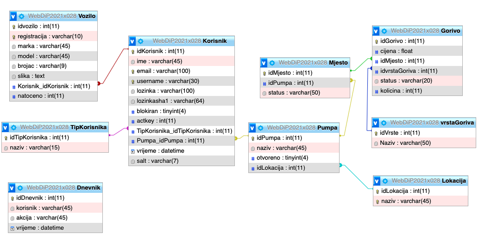
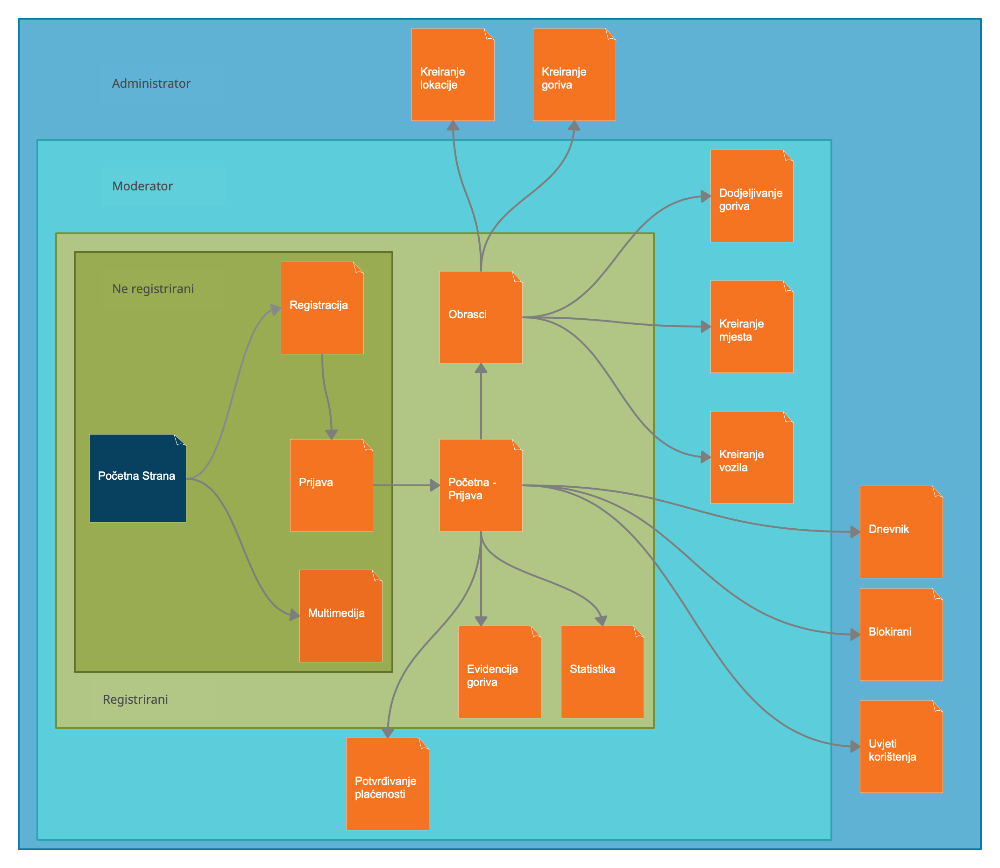

Opis projektnog zadatka i rješenja
Bilo je potrebtno izraditi web aplikaciju koja služi za upravljanje benzinskom postajom i evidenciju potrošnje goriva.
Jedna od ključnih funkcionalnosti je izrada uloga. Aplikacija treba funkcionirati uz pomoć phpmyadmina.
Elementi koji se ocjenjuju su:
- Registracija
- Prijava
- Rad sustava
- Funkcije koje može obavljati neregistrirani korisnik
- Funkcije koje može obavljati registrirani korisnik
- Funkcije koje može obavljati moderator
- Funkcije koje može obavljati moderator
- Posebne osobine
- Dokumentacija
- Dizajn
- Programski kod
- Prezentacija
ERA MODEL

Popis i opis skripata i navigacijski dijagram
- baza.class.php - klasa koja nam omogucuje spajanje na bazu
- sesija.class.php - klasa koja nam omogucuje stvaranje sesije
- meni.php - Prikazuje navigaciju ovisno o ulozi
- dnevnik.php - tablica sa dnevnikom rada (tko je što radio u aplikaciji)
- statistika.php - tablica sa statistikom potrošnje goriva
- multimedija.php - Prikaz slika
- popis.php - popis benziskih postaja i mjesta, goriva te cijene goriva
- popis2.php - popis prilagođen za registrirane korisnike (može se pretraživati koliko odabrana postaja ima mjesta)
- logout.php - završava sesiju i odlogirava nas
- blokirani.php - popis blokiranih ljudi, administrator može odblokirati željenog korisnika
- obrasci
- obrazac.php - obrazac za pregled/ažuriranje i dodavanje svojih vozila
- prijava.php - obrazac za prijavu
- gorivo.php - obrazac za pregled ažuriranje i kreiranje novog goriva
- potvrda.php - obrazac za potvrdu registracije
- lokacije.php - pregled ažuriranje i dodavanje novih lokacija
- passreset.php - generira se nova lozinka ako je korisnik zaboravio staru
- dodjela.php - moderator dodjeljuje gorivo mjestima na pumpi za koju je zadužen
- mjesta.php - moderator može dodavati nova mjesta na pumpu za koju je zadužen
- moderatori.php - administrator može dodjeljivati moderatore pumpama i brisati
- registracija.php - forma za registraciju novog korisnika
- pumpe.php - popis pumpi i dodjeljivanje lokacija pumpi
- materijali
- logo.png
- autor.jpg
- era.png
- auto1.png
- auto2.png
- auto3.png
- auto4.png
- auto5.png
- auto6.png
- css
- vgoles.css - služi za oblikovanje i dizajniranje web stranice
- js
- vgoles.js - sadrži javascript funkcije koje sam koristio
- jqurey
- dataTables.js - sadrži funkcije pomoću kojih se oblikuju tablice

Popis i opis korištenih tehnologija i alata
- HTML - (HyperText Markup Language) Osnovni jezik za izradu web stranica
- CSS - Cascading Style Sheets) Stilski jezik za opis prezentacije dokumenta napisanog u HTML-u
- JavaScript - Skriptni s kojim određujemo ponašanje web stranice.
- jQuery - JavaScript biblioteka
- PHP - programski jezik kojim se programira na strani poslužitelja
- SQL - programski jezik koji za rad s bazama podataka
- phpmyadmin - alat za upravljanje i administraciju MySQL
- Sublime Text - editor u kojem se piše kod
Popis i opis korištenih tehnologija i alata
- DataTables - služi za oblikovanje tablica
- reCaptcha - vrsta testa kojim se testira je li korisnik čovjek ili računalo